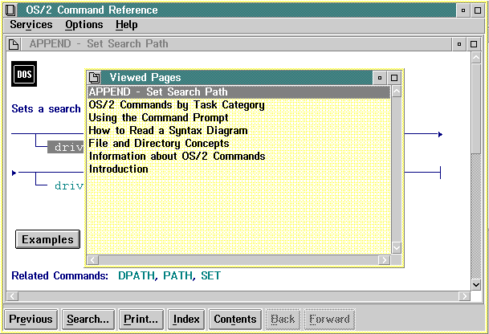

Selection lists appear when some of the following menu bar choices are selected:
The following figure shows the Viewed Pages selection list.

View Pages Selection List
Search results also are displayed in a selection list. Selection lists differ from the help-text window in that they can be closed, either by selecting the Close symbol or by pressing the Esc key.
Selecting the hide button from the title bar while a help-text window, Contents window, Viewed Pages window, Index window, or Search results window is displayed, results in the window being replaced by an icon.